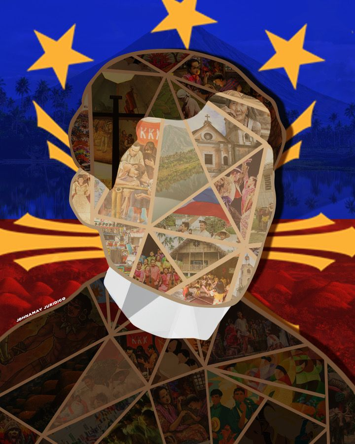
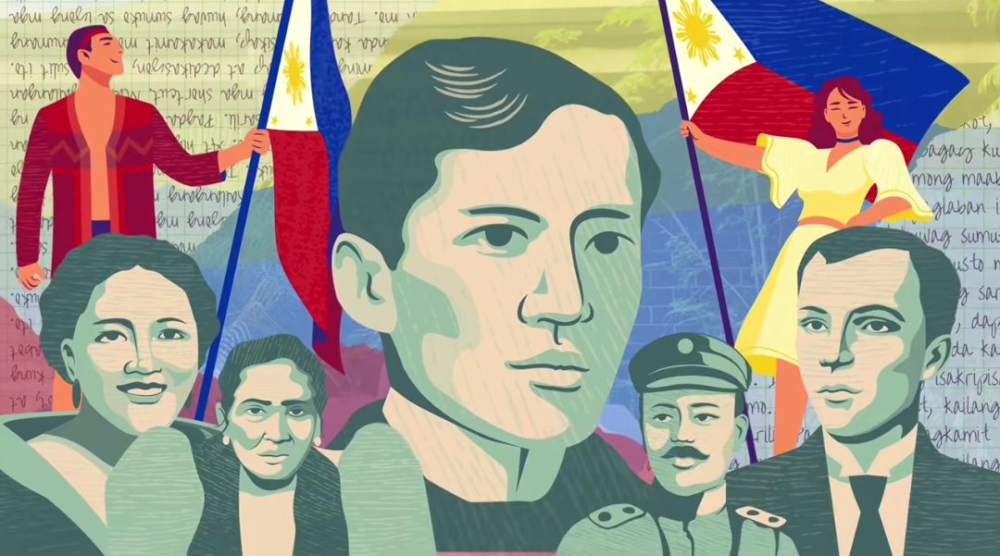
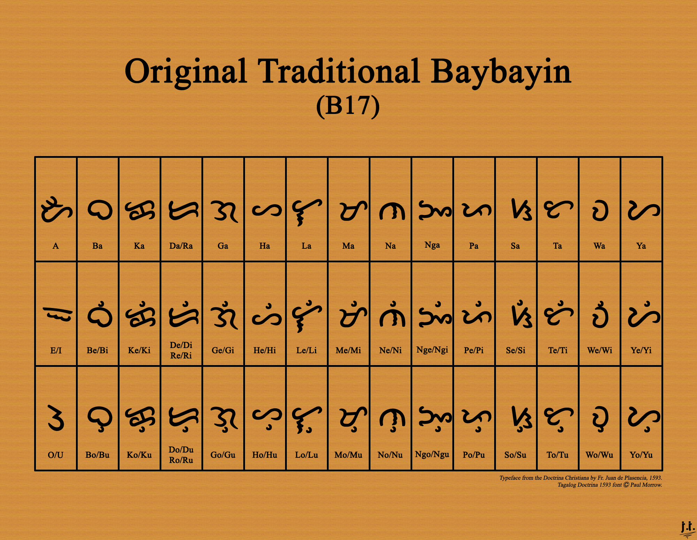

Ang Wikang Filipino ang pambansang wika ng Pilipinas na nagsisilbing makulay at matatag na tulay sa pagkakaisa ng bawat Pilipino. Bagamat nakabase ito sa Tagalog, patuloy itong yumayabong at kumukuha ng lakas at yaman mula sa iba't ibang katutubong wikain sa ating bansa—tulad ng Ilocano, Cebuano, Hiligaynon, Kapampangan, at Bikolano—pati na rin sa mga hiram na salita mula sa wikang Espanyol at Ingles. Dahil sa patuloy na ebolusyong ito, ang Filipino ay isang buhay, dynamic, at modernong wika na mabilis na nakakaangkop sa nagbabagong panahon, modernong teknolohiya, at pandaigdigang pop culture.
Higit pa sa pagiging simpleng paraan lamang ng pakikipag-usap o pakikipagtalastasan, ang Wikang Filipino ang siyang pangunahing nag-iingat at nagpapasa ng ating kasaysayan, kwento, kultura, at natatanging tradisyon sa mga susunod na henerasyon. Ito ang wikang pumupukaw sa ating damdamin kapag nakikinig tayo ng mga paboritong OPM songs, ang wikang nag-uugnay sa atin sa mga palabas sa telebisyon at pelikula, at ang daluyan ng pampublikong diskurso sa lipunan. Maging sa pang-araw-araw na kwentuhan sa kalsada o sa mabilis na mundo ng social media, ito ang gamit natin upang magkaroon ng mas malalim na pagkakaunawaan. Sa pamamagitan ng Filipino, mas madaling naipapahayag ng mga Pilipino ang kanilang tunay na damdamin, malikhaing saloobin, at natatanging galing sa iba't ibang larangan saanmang sulok ng mundo.
Sa kabila ng pagkakaroon ng kapuluang binubuo ng higit sa 7,000 isla at iba't ibang rehiyonal na kultura sa buong bansa, ang Wikang Filipino ang pangunahing nagbubuklod sa atin bilang iisang lahi at bansa. Ito ang nagbibigay sa atin ng sarili at pambansang pagkakakilanlan na magpapakilala sa atin sa gitna ng iba't ibang bansa sa mundo. Nagpapaalala ito na gaano man tayo kalayo sa isa't isa at saan man tayo magpunta, iisang boses, damdamin, at puso ang patuloy na nag-uugnay at nagpapatibay sa ating lahat bilang mga Pilipino.
